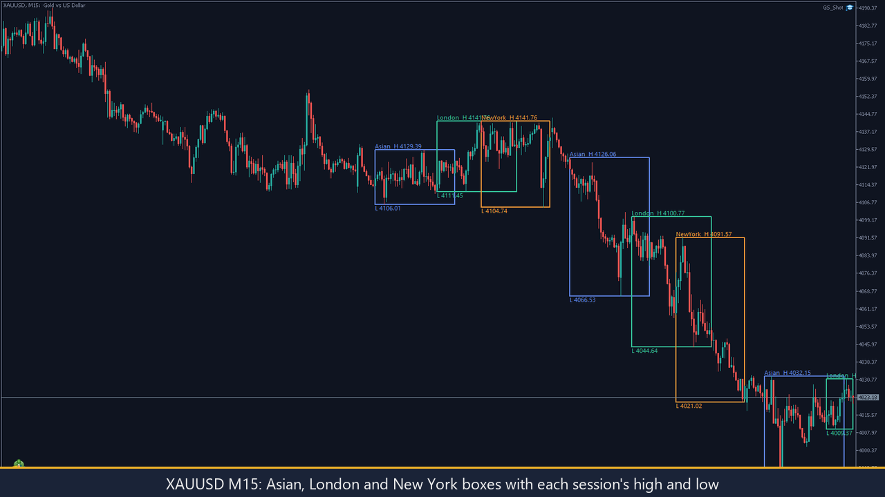
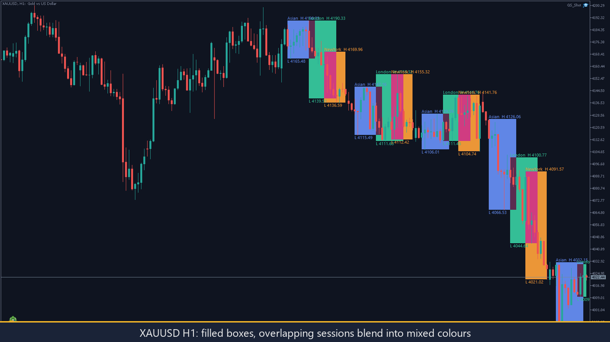
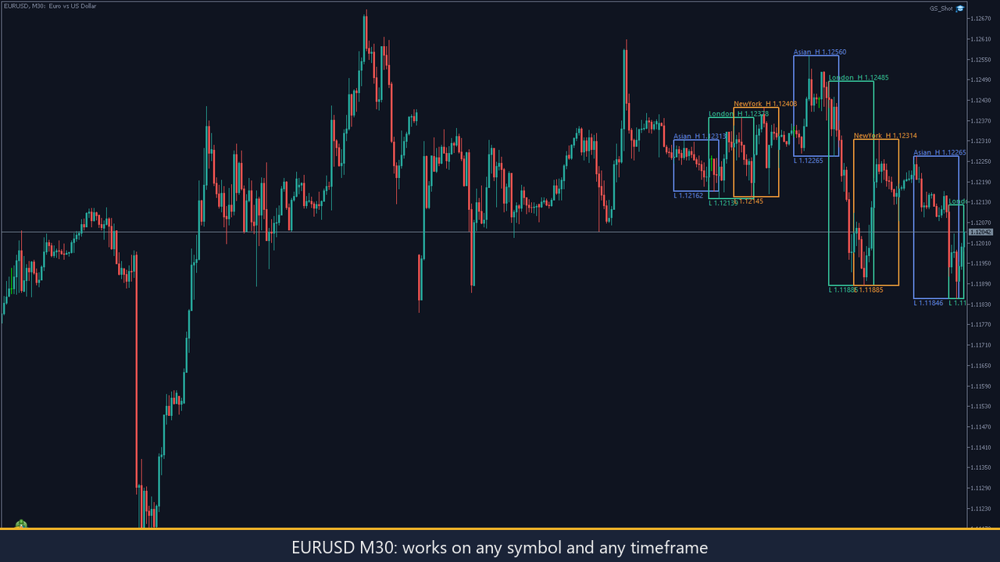

GoldSessions: see every trading session on your chart
For every day it draws one box per trading session: Asian, London and New York. The top edge is the session high, the bottom edge is the session low, and optional labels show both prices. You see where each session ended and how wide it was. It is a read-only chart tool: it never opens, modifies or closes a trade, uses no DLLs and makes no web requests.



Who it is for
Gold and forex traders who plan around session hand-overs and want the Asian range, the London move and the New York move marked on the chart.
Key features
One box per session and day
From the session's first to last minute; 1 to 30 days (default 5). Weekends draw nothing.
Labels and tooltips
Optional high and low labels; the tooltip shows server times and the minute of the high and low.
Exact highs and lows
Taken from M1 bars, exact to the minute, whatever timeframe the chart uses. The running session grows with the market.
Your own hours
Session hours are inputs in UTC. Defaults: Asian 00:00-09:00, London 07:00-16:00, New York 12:00-21:00.
Broker time offset
Detected automatically, or enter a fixed number of hours.
Look
Show or hide each session, outlines or filled boxes, your own colours.
Honest limits
- Hours are fixed UTC inputs: London and New York shift by an hour when the UK or US change their clocks, so adjust the inputs twice a year.
- One broker offset is used for all drawn days; if your broker's clock changed inside them, older days are one hour off.
- The Strategy Tester cannot detect the offset; set it by hand there.
- M1 history is needed; without it nothing can be drawn.
- It is a drawing aid, not a signal: it shows what already happened and gives no entries, exits or forecasts.
The source code is private; this page shows what the product does, not its code. Screenshots are from a MetaTrader 5 demo account.
Want GoldSessions on your terminal?
Available on the MQL5 Market. Hours, days, colours and offset are inputs. For a version adapted to your own sessions, message me. Price: 30 USD.
Get it on the MQL5 Market Message on Telegram WhatsApp Email See my CV